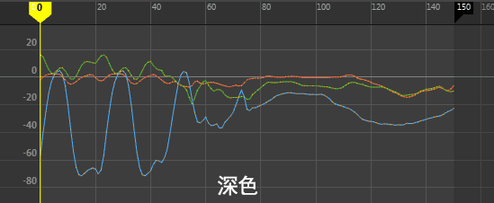

主题涵盖预设颜色和视图设置，可用于更改“曲线图编辑器”(Graph Editor)的外观以适应您的工作流。包含五个主题：“深色”(Dark)、“浅色”(Light)、“TRS 不同”(TRS Distinct)、“色觉障碍兼容”(Colorblind Compatible)和“经典”(Classic)。

其中每个主题旨在为您提供舒适且便于访问的工作区。您可以通过调整颜色首选项进一步自定义以上任一主题。
编辑曲线图编辑器主题
- 在“曲线图编辑器”(Graph Editor)菜单栏中，选择“视图 > 主题 > <主题名称>”(View > Theme > <Theme Name>)。
- 选择“视图 > 主题 > 颜色首选项”(View > Theme > Color Preferences)。
- 在显示的“颜色”(Colors)窗口中，调整“曲线图编辑器”(Graph Editor)颜色，然后单击“保存”(Save)。有关详细信息，请参见“曲线图编辑器”(Graph Editor)颜色。
导出曲线图编辑器主题
- 在“曲线图编辑器”(Graph Editor)菜单栏中，选择“视图 > 主题 > <主题名称>”(View > Theme > <Theme Name>)。
- 选择“视图 > 主题 > 导出当前主题”(View > Theme > Export Current Theme)。
在“脚本编辑器”(Script Editor)中生成可共享的 MEL 脚本，从而可以轻松地在协作者之间或跨工作室传递主题。